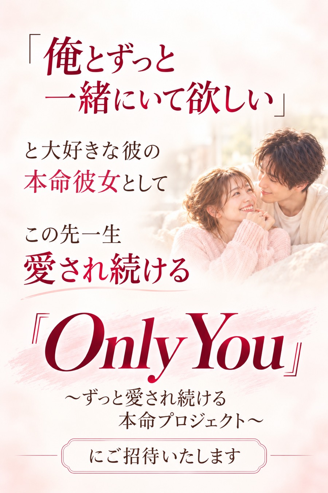
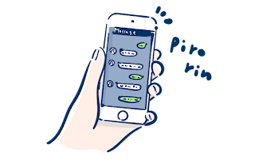
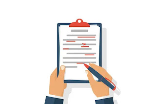

「俺とずっと一緒にいて欲しい」と大好きな彼の本命彼女としてこの先一生愛され続ける『Only You』〜ずっと愛され続ける本命プロジェクト〜にご招待いたします

彼からずっと愛される
そんな自分を手に入れませんか？
まず、
ここまで「愛されnote」を
読んできてくださって
本当にありがとうございます。
ここまで読んでくださったあなたは、
きっともう、
ただ
「彼から返信がほしい」
「もう一度会いたい」
だけではないと思います。
彼のLINEが遅くなるたびに
「もう気持ちないのかな」
って不安になったり、
嫌われるのが怖くて、
本当は会いたいのに
「忙しいなら大丈夫だよ」
って我慢したり、
「これ言ったらどう思われるかな」
「今は待った方がいいかな」
って、
彼の反応ばかりを
気にする恋愛から抜け出したい。
そして、
「会いたい」「好きだよ」
って言ってもらえて、
曖昧なままではなく、
ちゃんと
「俺と付き合ってほしい」
と本命として選ばれて、
付き合ったあとも
「この先もずっと一緒にいたい」
って思ってもらえる。
そんな恋愛を
本気で叶えたい
と思っていますよね！
僕は、
そんなあなたの力になります。
男性である僕だからこそ分かる
彼側の気持ちや考え方と、
これまで多くの女性の恋愛を
一緒に見てきた経験をもとに、
あなたが彼からずっと
愛される女性になるために
一つずつ一緒に進んでいきます。
このプロジェクトは
恋愛テクニックを
覚えるだけのものではありません
このプロジェクトは、
「返信を何時間空ければいい」
「こう送れば彼が追ってくる」
「男はこうすれば落とせる」
そんな、
その場だけ彼の反応を変えるための
恋愛テクニックや
モテるためのノウハウを
教えるものではありません。
恋愛のことになると、
「何かしちゃったかな」
って悪い方向に考えてしまったり
大好きな彼との関係も
このまま進まないんじゃないか。
彼が少しずつ
離れていってしまうんじゃないか。
そんな不安でいっぱいな
あなたのための
プロジェクトです
まーくんが一緒に
こんな未来を叶えます！
朝起きてスマホを見ると、
彼から「おはよ〜☀️」
ってLINEが来てる。
仕事のお昼休みには、
「今日のお昼これ食べた🍜」
って写真が送られてきたり、
仕事が終わる頃には、
「今終わった〜！」
「今日はどんな1日だった？」
って、
あなたから送らなくても
彼の方から連絡をくれる。
「返信くるかな…」
って待つんじゃなくて、
彼の方からあなたと話したくて
LINEをしてくれる毎日。
そして週末が近づけば、
「土曜日空いてる？」
「ここ一緒に行きたい！」
って、
彼の方から次の予定を
考えてくれる。
デートの日も、
カフェでくだらない話を
して笑ったり☕️
一緒にご飯を食べながら
仕事の話をしたり🍽️
次に行きたい場所を
二人で探したり。
気づけば、
「え、もうこんな時間？」
ってなるくらい、
彼と一緒にいる時間が
あっという間に過ぎていく。
帰り道には、
「今日めっちゃ楽しかった」
「もうちょっと一緒にいたかったな」
って言ってくれて、
家に着いたあとにも
「ちゃんと着いた？」
ってLINEが来る。
そして、
あなたが追いかけなくても、
彼の方から
「会いたい」「好きだよ」
って伝えてくれる。
「私のこと、本当に好きなのかな…」
なんて何度も考えなくても、
LINEでも、
会っているときでも、
何気ない行動からでも、
「私、ちゃんと大切にされてる♡」
って感じられる。
そしていつか、
彼の方から
「俺と付き合ってほしい」
「これからもずっと一緒にいたい」
って、
曖昧な関係ではなく
大好きな彼の本命彼女として
ちゃんと選んでもらえる💍♡
そんな毎日です。
Only You
〜ずっと愛され続ける
本命プロジェクト〜
プロジェクトの詳細
あなたも
プロジェクトに参加をすると
彼からずっと愛され続ける
溺愛マインドをインストール
追いかける恋が
追われる恋に変わる
「私ばっかり好きみたい...」
そんな不安がなくなって
会うたび、話すたび、
もっと彼との距離が縮まる
男性目線で教える
愛される女性の関わり方
あなたが無理をしなくても
彼が自然と追いかけて
くるようになる
愛され体質習得法
2ヶ月間、あなたの恋を一緒に進めていきます
- 最初に今の状況を整理
彼との現状や悩みを
ヒアリングして、
今のあなたに
合った進め方を決めます - 全8本の動画講座＋ワーク
彼から愛され続けるための
考え方や関わり方を学びます - 学びながら、実際の恋で実践
LINEや電話で相談しながら、
今の彼との
関係で少しずつ試していきます - 中間面談で一度チェック
彼との変化や悩みを整理して、
後半の進め方を調整します - 最終面談で2ヶ月間を振り返る
変化を整理して、
これからも自分で恋愛を
進めていける状態へ
更に今回は
参加してくれる方限定で
豪華特典をお付けします！
ここまで配信を読んでくれたあなたには、
感謝の気持ちを込めて。
今回、特別な4つの
サポート特典をお届けします！
ただ情報を渡して終わりじゃなくて、
「自分でも変われた！」って
実感できるところまで一緒に
進んでほしい。
そのために、最大限
寄り添ったサポートをご用意しました。
特典①「どうしよう…」の瞬間に、
すぐ頼れる安心サポート！
LINEサポート

「今これ送っても大丈夫かな…」
「さっきの彼の言葉、どういう意味？」
そんな風に悩んだとき、
ひとりで考え込まずにすぐに相談できる。
それだけで、
気持ちがぐっと軽くなることも
あります＾＾
Build Your Ownプロジェクトでは
サポート専用LINEを使用して
最優先で、
お返事をさせていただきます！
こんなときにも使えちゃう
- LINEの返信内容や行動で迷ったとき
- 彼の言葉や態度に戸惑ったとき
- 気持ちが落ち込んで誰かに聞いてほしいとき
- モチベーションを保ちたいとき
恋愛中の「ひとりで抱える不安」を
いつでも解消できるように、
気軽に頼ってくださいね＾＾
特典②“なんとなくのモヤモヤ”も
一緒に整理しながら進められる
電話サポート
（希望者のみ）
感情が絡む恋愛のこと、
ちゃんと話して整理できます
「LINEだけじゃ伝えきれない…」
「自分でも何に悩んでるのか、よく分からない…」
そんなときに、
しっかり時間をとってお話しすることで、
自分の中のモヤモヤが整理されたり、
次の一手が見えてきたりします。
電話で話すとスッキリすること、あります
- 状況を詳しく話して、深くアドバイスが欲しいとき
- LINE文面の意図や彼の気持ちを掘り下げたいとき
- 漠然とした不安やモヤモヤを言語化したいとき
- デートや告白前に、気持ちを整えておきたいとき
“ちゃんと話せる場が
ある”っていうのは、
それだけで心強いものです＾＾
電話が苦手な人は、
まとまって素早くやり取りできる、
リアルタイムチャットサポートも
あるので安心してください。
特典③彼との関係を壊さず、
男性目線で相手が喜ぶような
文面が再現できる
LINE文面添削

彼とのLINE、
いつも「なんて送ればいいの？」
って悩んでいませんか？
好きな気持ちはある。
でも、それを
どう伝えたらいいか分からなくて、
毎回、送る前にスマホの
前で手が止まってしまう…。
「この言い方、重くないかな…」
「なんか返信こない気がして怖い…」
「ちゃんと伝えたいけど、自信がない…」
そんな時に頼ってほしいのが、
この【LINE文面添削サポート】です。
あなたが送ろうとしているLINEを
見ながら、
“男性目線で見てどう感じるか”を
一緒に考えて、
あなたの気持ちがちゃんと伝わる言い方を
一緒に作っていきます＾＾
こんなときにも使えちゃう！
- デートに誘いたいけど、伝え方に迷うとき
- 彼の返信がそっけなくて、不安なとき
- 自分の想いを伝えたいけど、重く感じさせたくないとき
- 会話が止まりそうなとき、自然に続けたいとき
「なんて送ればいいか分からない」
その悩みを一緒に
解決していきましょう＾＾
この4つのサポートで、
追われる恋を実現します！
「自分のことを
うまく話せるか不安…」
そんな方でも大丈夫です
「相談したいけど、
自分の気持ちを
うまく言葉にできるかな…」
「何に悩んでいるのか、
自分でもちゃんと整理できていない…」
と不安に思っている方も
いるかもしれません。
でも、最初から
きれいに話せなくても大丈夫です。
「なんとなく不安」
「うまく説明できないけど苦しい」
その状態のまま
話してもらって大丈夫です。
むしろ自分で全部整理ができていたら
そこまで悩むこともないですよね。
今何に悩んでいるのか、
本当はどうしていきたいのから
一緒に整理させてください♪
話すことが得意じゃなくても、
言葉にするのが苦手でも大丈夫。
あなたのペースで、
一つずつ一緒に進んでいきましょう＾＾
あなたのことを否定せず
しっかり寄り添います♪
今の恋愛について
友達に相談したけど
「その男、やめた方がいいよ」
「早く次行きなよ」
そんなふうに言われて、
誰にもわかってもらえなかったり、
気づけば自分に
自信がなくなっていたり…。
それでもあなたは、
「簡単に諦めたくない」って、
ここまで頑張ってきたんですよね。
僕は、そんなあなたを
絶対に否定したりしません。
むしろ、ずっと悩みながらも
これまで行動してきたことが
本当にすごいと思っているし
その想いに、僕は全力で応えたい。
あなたが抱えている不安や迷いは、
もう一人で抱えなくていいんです。
僕があなたと一緒に
頑張りたい理由
これまでたくさんの方の
相談に乗らせていただきましたが、
その中で僕は
もっと一人ひとりに向き合いたい
と強く思うようになりました。
ただ、正直に言うと
時間にも限りがあり
全員をサポートし続けることは
難しくなってきました。
だから今回は、
有料のプロジェクトとして
ご案内することにします。
これは、あなたと一緒に
本気で取り組む覚悟で
そして僕自身も、
結果に責任を持つための選択です。
知識を教えるのではなく
伴走をするのが僕の役目です
今までにも、
SNSで男性心理を見たり、
“追われるにはどうすればいいか”
って検索してきたと思います。
でも、そこで得られるのは
「知識」までなんです。
勉強でもスポーツでも、
「教わる」のが当たり前ですよね。
同じように“恋愛”も、
ただ知ってるだけじゃ変わらない。
だって、みんな
性格も、考え方も、恋愛の癖も違う。
勉強やスポーツに先生やコーチの
サポートが必要なように
恋愛にも“あなただけに合った
サポート”が必要なんです。
特に恋愛は「相手」も
人それぞれですよね
だからこそ、
ネットで拾った知識が
“彼”に当てはまるかどうかが
わからないのは当然です。
本当に変わりたいなら、
知識を集めるより、
“できるようになる環境”
に身を置くことが大事ですし
僕は「できるようになる」を
サポートをするプロです！
でも…
高いんじゃないですか？
そう思った方も、
きっといると思います。
実際、知識だけを提供する
noteやブログ、本は
数千円〜数万円で
済むのに対して
彼との幸せを一緒に叶えることを
サポートをする形式の
恋愛コンサルや結婚相談所の
個別サポートって
数十万円から100万円を超えるのも
珍しくありません。
実際に僕のところにも、
「他の方から30万円くらいの
講座を勧められました」
という声は本当に多く、
実際に恋愛コンサルの料金を
僕も調べてました。
他社サービスの比較
| A社 | B社 | C社 | |
|---|---|---|---|
| サポート期間 | 2ヶ月 | 6ヶ月 | 12ヶ月 |
| 電話相談 | 月2回 | 月1回 | 月2回 |
| LINE相談 | 自由 | 回数制限あり | 自由 |
| 動画教材 | × | × | ○ |
| 金額 | 200,000円 | 300,000円 | 1,100,000円 |
こうして見ると、
平均でも30万円前後はかかります。
それだけの金額を払って
変われた人もいると思いますし、
僕もそれを否定するつもりは
全くありません。
ただ、今回のプログラムは
30万円なんて高額にするつもりは
全くないので安心してください！
詳しい金額は、
明日の配信でご案内します。
よくある質問
このプログラムはどんな内容ですか？
彼の気持ちがわからなくて悩んでいるあなたが、ありのままのあなたで愛される恋に変わるためのプログラムです。ただの恋愛テクニックではなく「彼の本当の気持ち」を知ることで、ありのままの自分で愛されるようにします！
本当に効果はありますか？
これまでの参加者さんからは「本当に変われた」「彼から告白されました」など、嬉しいご報告をたくさんいただいています。正直、楽な近道はありませんが、正しい方法で行動すれば、恋愛の流れも確実に変わっていきます。僕が横で伴走しますので、一緒に進んでいきましょう！
忙しくても参加できますか？
このプロジェクトは、あなたの生活や予定に合わせて進められるように作られています。短時間でも日常の中に取り入れられる仕組みがあるので、忙しい中でも確実に成長できます。「やりたいけど時間が…」という方ほど、着実に成果を感じられるはずです。
年齢が気になります…
今この瞬間が、これからの人生で一番若いタイミングです。何歳であっても、正しい方法と少しの勇気があれば関係性は変えられます。「このままじゃイヤ」「変わりたい」と思えたその気持ちが、一歩を踏み出すための最高のスタートになります。
申し込み期限はいつまで？
今回は先着10名限定です。少しでも気になっている方は、チャンスを逃さないために早めに動くことをおすすめします。特にこのプロジェクトは、早く始めた方が効果を実感するのも早くなります。
支払い方法は？
クレジットカード、コンビニ払いに対応しています。分割払いもご相談可能ですので、無理なくスタートできる方法を一緒に選びましょう。LINEにご連絡ください！
申し込み後のキャンセルは？
参加してみて「合わないかも」と感じた場合は、開始後5日以内かつ申し込みから14日以内であれば返金対応可能です。安心してお試しいただける環境を整えています。
家族や友人にバレませんか？
ご自宅に郵送物が届くことは一切なく、やり取りはすべてLINE上で完結。個人情報も厳密に管理しており、外部に漏れることはありません。
いよいよ明日
21:00から申し込みが
スタートします！
会いたいな〜
って思ってたときに彼から
「◯日の夜さ、
ちょっとだけでも会えない？」
って予定を立ててくれて
会ったときには
「今日、めっちゃ楽しみにしてた！」
って言ってくれて
会ってない時でも
「今日どうやった〜？」って
彼があなたのことを考えているのが
溢れるくらい伝わってくる。
彼からどんどん追われて
「一緒にいると落ち着くし、
正直もう誰にも取られたくない」
「これからはちゃんと
彼女として付き合ってほしい。」
と彼から想いを告げられ
彼女として愛される存在に...
そんな愛されている気持ちで
溢れていく、日々が待っています！
あなたが彼から大切にされ、
本命として愛される未来を
叶えていくために
僕も全力で伴走をしていくので
明日から、
あなたと一緒に頑張れる日を
心から楽しみにしています😊
【今日のワーク】
6日間の配信を読んできた今、
きっとあなたの中にも
「本当はこんな自分になりたい」
「彼とこんな関係を築きたい」
そんな未来が、
少しずつ見えてきていると思います！
だから今日は、
その未来を叶えるための第一歩として、
あなたの理想を僕に宣言してください！
ただ、
ここでいう理想は
「付き合いたい」
「もっと返信してほしい」
だけではありません。
その先にある、
彼とどんな毎日を過ごしたいのか。
彼の隣で、どんな自分でいたいのか。
もし叶ったら、
思わず泣いてしまうくらい嬉しい。
そんな、
あなたが心の底から望んでいる未来です。
周りの人には言えないようなことでも、
遠慮しなくて大丈夫です。
最高の自分で、
彼との最高の未来を手に入れるためにも。
今ここで、僕に宣言してください！！